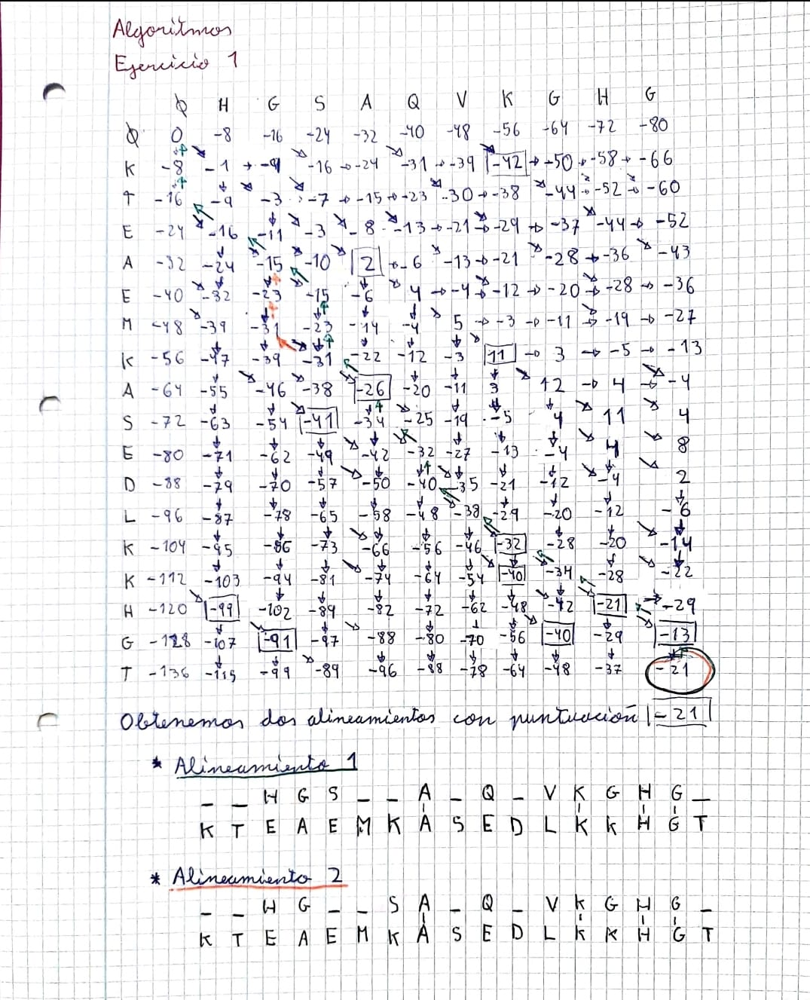
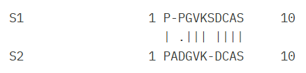
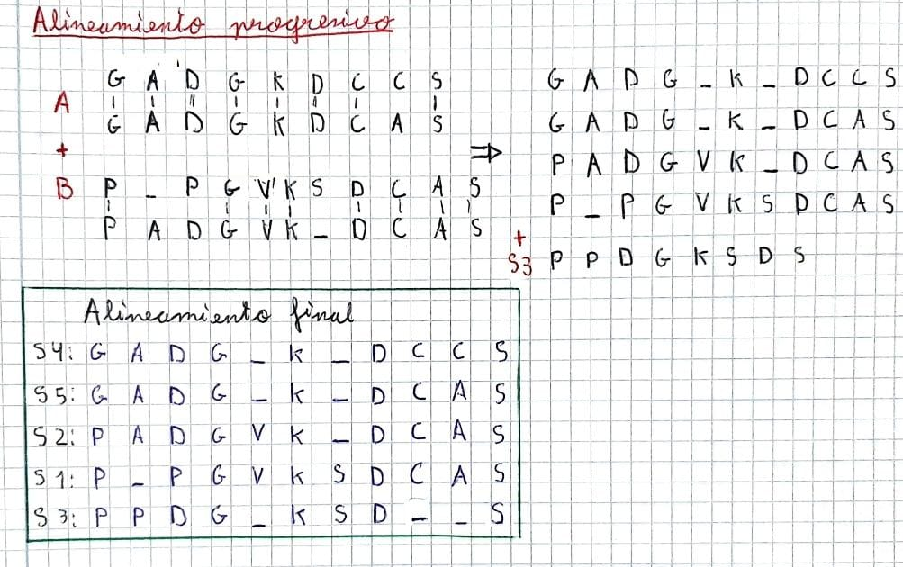
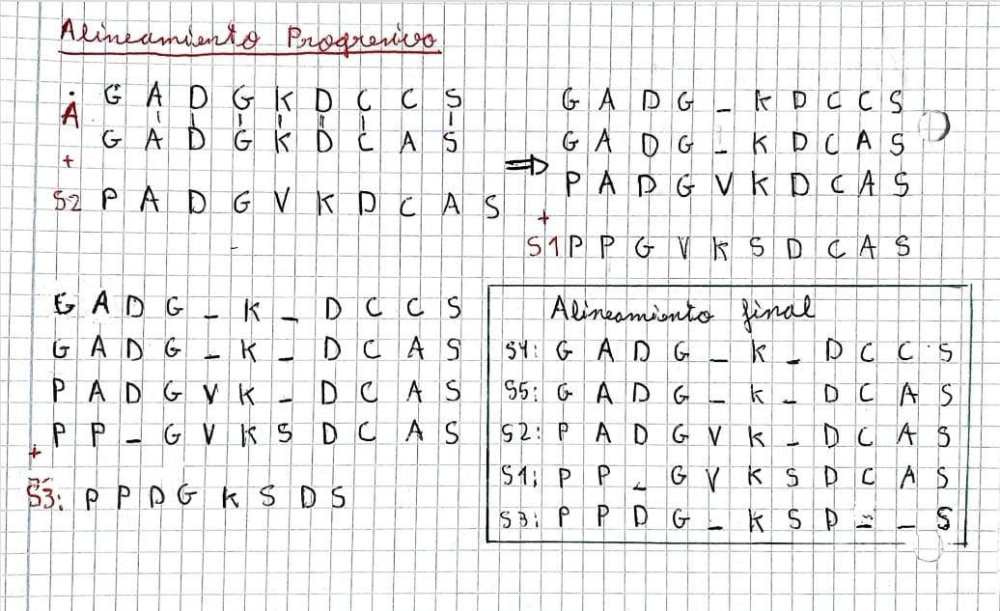

from Bio import AlignIO
import logomaker
import matplotlib.pyplot as plt
import numpy as np
# Cargar y procesar el alineamiento
alignment = AlignIO.read("Alineamiento_final_BLOUSUM40.fa", "fasta")
sequences = [str(record.seq) for record in alignment]
# Crear matriz de conteos (sin gaps)
counts_matrix = logomaker.alignment_to_matrix(sequences, to_type='counts', characters_to_ignore='-')
# Convertir a frecuencias relativas (ignorando gaps)
frequency_matrix = counts_matrix.div(counts_matrix.sum(axis=1), axis=0)
# Calcular información (en bits) para cada posición
information_matrix = logomaker.transform_matrix(frequency_matrix, from_type='probability', to_type='information')
# Crear el logo
logo = logomaker.Logo(
information_matrix, # Usamos la matriz de información directamente
color_scheme='chemistry',
font_name='Arial',
show_spines=True,
stack_order='big_on_top'
)
# Limitar bits a 4.32 si es necesario
logo.ax.set_ylim(0, 4.32)
# Personalización adicional
logo.ax.set_title("Logo de alineamiento progresivo con la Blosum40")
logo.ax.set_xlabel("Posición")
logo.ax.set_ylabel("Bits")
logo.ax.set_ylim(0, 3)
plt.tight_layout()
plt.show()Ejercicios2_algoritmos
WORKSHEET
Ejercicio 1 (4 puntos)
En este ejercicio probarás el algoritmo Needleman-Wunsch en una secuencia corta de partes de hemoglobina (código PDB 1AOW) y mioglobina 1 (código PDB 1AZI). Aquí alineará la secuencia HGSAQVKGHG con la secuencia KTEAEMKASEDLKKHGT.
Las dos secuencias están dispuestas en una matriz en la Tabla 1. Las secuencias comienzan en la esquina superior derecha, y las penalizaciones por desfase inicial se enumeran en cada posición inicial de desfase. La penalización por desfase se considera -8. Las puntuaciones de similitud Si,j procedentes de la búsqueda de coincidencias proceden de la tabla BLOSUM40.

Como se puede observar, La puntuación obtenida es -21 y se han encontrado dos alineamientos globales posibles.
Ejercicio 2 (6 puntos)
Dado el conjunto de secuencias múltiples:
S1: PPGVKSDCAS
S2: PADGVKDCAS
S3: PPDGKSDS
S4: GADGKDCCS
S5: GADGKDCAS
Utilice el popular método de alineación progresiva para alinear globalmente el conjunto anterior de secuencias. Genere el árbol guía por unión de vecinos. Compare su resultado (alineamiento) con el de Clustal-Omega.
Con el alineamiento final representa el logo. Para este proposito los caracteres nulos o gap son ignorados y no cuentan para el número de observaciones de una columna.
Métodos
Para este ejercicio decidimos utilizar EMBOSS Needle, Pairwise Sequence Alignment (PSA) para realizar los distintos alineamientos dos a dos; y Clustal Omega (1.2.4), Multiple Sequence Alignment (MSA) para el alineamiento múltiple.
Los alineamientos progresivos y guide trees correspondientes a los alineamientos dos a dos, los realizamos a mano.
Finalmente, obtuvimos los logos en R, utilizando los paquetes Biostrings, ggseqlogo y ggplot2.
Alineamientos dos a dos
Los parámetros que utilizamos para realizar este proceso son:
Decidimos intentar mantener unos parámetros próximos a los utilizados en el ejercicio 1: una tabla BLOSUM40 y restar 10 por cada gap (lo más próximo a 8 que estaba disponible).
Obtuvimos los siguientes alineamientos son sus scores correspondientes, calculados dividiendo el número de coincidencias entre el número de residuos sin tener en cuenta los gaps:

Y construímos la matriz de distancias, para la cual hacemos 1 - el score de similitud del alinemaiento:
Finalmente, construímos el guide tree:
Y el alineamiento progresivo:

Con parámetros por defecto
También, debido a que Clustal Omega utiliza una tabla BLOSUM62, decidimos repetir este proceso pero dejando los parámetros que vienen por defecto:
Los alineamientos y scores obtenidos con estos parámetros fueron:

La matriz de distancias correspondiente a estos alineamientos sería:
Finalmente, construímos el guide tree:
Y el alineamiento progresivo:

Alineamiento múltiple
Los parámetros utilizados para realizar este proceso fueron:
Obtivos el siguiente guide tree:
Y este alineamiento múltiple:
Comparación y logo
Observamos que los guide tree obtenidos por ambos alineamientos dos a dos, difieren entre sí y con el guide tree obtenido por el Clustal Omega. Los alineamientos progresivos obtenidos en los alineamientos 2 a 2 con la BLOUSUM40 y BLOUSUM62, son muy semejantes, variando únicamente por a posición de la segunda prolina (P) de la S1, debido a la utilización de distintas matrices de sustitución y los diferentes valores utilizados para penalizar los gaps.
Ambas varían mucho del alineamiento múltiple obtenido mediante el Clustal Omega, debido a que este método es heurístico y no garantiza encontrar el alineamiento globalmente óptimo, teniendo dificultad frente a deleciones e inserciones, en las que incluye gaps; siendo crucial la importancia de los parámetros introducidos para que esta se ajuste a la realidad, en el peor de los casos se utilizan valores predeterminados (como ocurre con Clustal Omega (1.2.4)), que pueden no ser ideales para todo el conjunto de datos.
Cargamos las librerías necesarias, caragamos los documentos FASTA de los alineamientos progresivos y obtuvimos el logo de ambos alineamientos dos a dos y del Clustal Omega.
Logo del alineamiento progresivo del alineamiento dos a dos mediante la Blosum40
Logo del alineamiento progresivo del alineamiento dos a dos mediante la Blosum40
from Bio import AlignIO
import logomaker
import matplotlib.pyplot as plt
import numpy as np
# Cargar y procesar el alineamiento
alignment = AlignIO.read("Alineamiento_final_BLOUSUM62.fa", "fasta")
sequences = [str(record.seq) for record in alignment]
# Crear matriz de conteos (sin gaps)
counts_matrix = logomaker.alignment_to_matrix(sequences, to_type='counts', characters_to_ignore='-')
# Convertir a frecuencias relativas (ignorando gaps)
frequency_matrix = counts_matrix.div(counts_matrix.sum(axis=1), axis=0)
# Calcular información (en bits) para cada posición
information_matrix = logomaker.transform_matrix(frequency_matrix, from_type='probability', to_type='information')
# Crear el logo
logo = logomaker.Logo(
information_matrix, # Usamos la matriz de información directamente
color_scheme='chemistry',
font_name='Arial',
show_spines=True,
stack_order='big_on_top'
)
# Limitar bits a 4.32 si es necesario
logo.ax.set_ylim(0, 4.32)
# Personalización adicional
logo.ax.set_title("Logo de alineamiento progresivo con la Blosum62")
logo.ax.set_xlabel("Posición")
logo.ax.set_ylabel("Bits")
logo.ax.set_ylim(0, 3)
plt.tight_layout()
plt.show()
Logo del MSA por Clustal Omega
from Bio import AlignIO
import logomaker
import matplotlib.pyplot as plt
import numpy as np
# Cargar y procesar el alineamiento
alignment = AlignIO.read("clustalo-I20250321-165928-0743-92365021-p1m.fa", "fasta")
sequences = [str(record.seq) for record in alignment]
# Crear matriz de conteos (sin gaps)
counts_matrix = logomaker.alignment_to_matrix(sequences, to_type='counts', characters_to_ignore='-')
# Convertir a frecuencias relativas (ignorando gaps)
frequency_matrix = counts_matrix.div(counts_matrix.sum(axis=1), axis=0)
# Calcular información (en bits) para cada posición
information_matrix = logomaker.transform_matrix(frequency_matrix, from_type='probability', to_type='information')
# Crear el logo
logo = logomaker.Logo(
information_matrix, # Usamos la matriz de información directamente
color_scheme='chemistry',
font_name='Arial',
show_spines=True,
stack_order='big_on_top'
)
# Limitar bits a 4.32 si es necesario
logo.ax.set_ylim(0, 4.32)
# Personalización adicional
logo.ax.set_title("Logo de alineamiento ClustalW")
logo.ax.set_xlabel("Posición")
logo.ax.set_ylabel("Bits")
logo.ax.set_ylim(0, 3)
plt.tight_layout()
plt.show()De los tres logos obtenidos, podemos destacar que aquel con más variedad en las posiciones es el obtenido por el alineamiento de Clustal Omega y el que posee más similitudes es el resultante del alineamiento progresivo dos a dos mediante la BLOSOUM62.